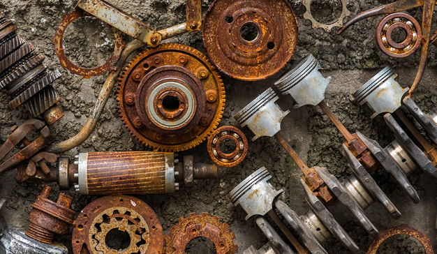
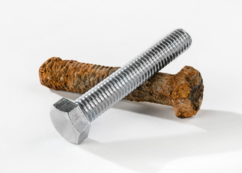

Corrosion is the degradation of a metal due to chemical or electrochemical reactions with its environment. Iron atoms can lose electrons relatively easily. Oxygen can accept those electrons. The electrolyte, usually a thin layer of water or moisture, allows ions to move and completes the electrochemical process. In general, corrosion is the degradation of metals as they move toward more stable, lower-energy states. People put in a lot of effort to extract pure metals, but many metals are not stable in air or water. That is why they tend to lose electrons and form oxides, which are often more stable than the pure metals.

1. Electrolyte: a substance or solution that allows ions to move and conduct electricity. Without moisture or an electrolyte, electrochemical corrosion is much slower or may not occur. Rust formation requires water and oxygen.
2. Temperature: Higher temperature increases the rate of corrosion because chemical reactions occur faster. Particles move more quickly, collide more often, and a larger fraction of collisions have enough energy to overcome the activation energy barrier, so more reactions succeed.
3. Air: it provides oxygen, which participates in oxidation.
4. The material itself: different metals have different tendencies to lose electrons.
That is why iron parts often corrode after rain.

Aluminum forms a very thin oxide layer immediately when exposed to air. This layer protects the metal underneath from further corrosion.
Gold does not corrode easily because it does not easily lose electrons.
Because rust is a porous, non-protective hydrated iron oxide, oxygen and water can reach the iron underneath, allowing corrosion to continue.
If the right side is wet, and the left side is not, then rust will start on the right side and can gradually damage the metal. If conditions allow, it can eventually become visible on the left side too. But rust only forms where conditions allow. And they can, because rust is porous.
Yes, it can be visible. Again, rust just forms where oxygen and water can reach.